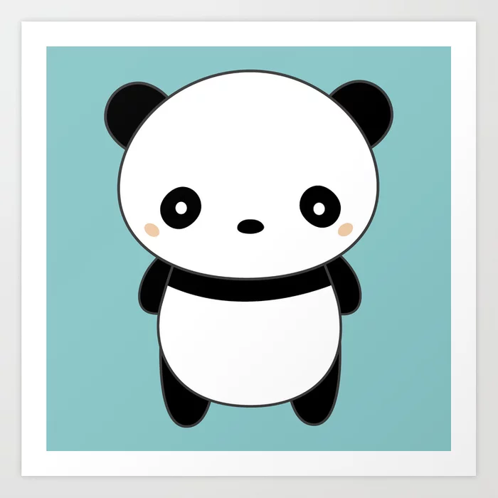
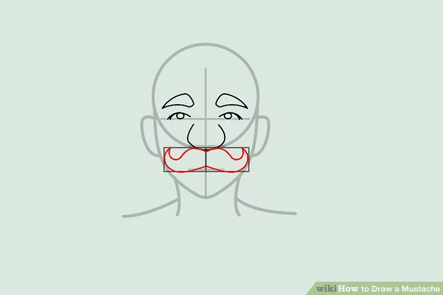

display images of projects + say what they do

Wrote Python code that inputs Speech-to-Text input, and determine which output should be used:
Text-to-Speech message or SMS message with Twilio's API.

Designed using Python. Implemented OpenCV to access user's webcam for image capturing,
and for use with mathmatical image filtering(FFT, DFT, and Gaussian Blurring).
Won "Best UX/UI" and "Best Usage of Moltin API" at HackBeanpot2019!
My team and I utilized Moltin's E-commerce API to create a shopping application for Android phones; our application implemented swiping features to provide an exciting way for users to discover new items .
For this project, wrote pseudocode in Python for a "scoring system", to show proof of concept for a Machine Learning algorithm, that would enable our app to recommend or hide items based on user's past swipe history.
I also helped set-up, and manage our item database via Moltin's Dashboard.